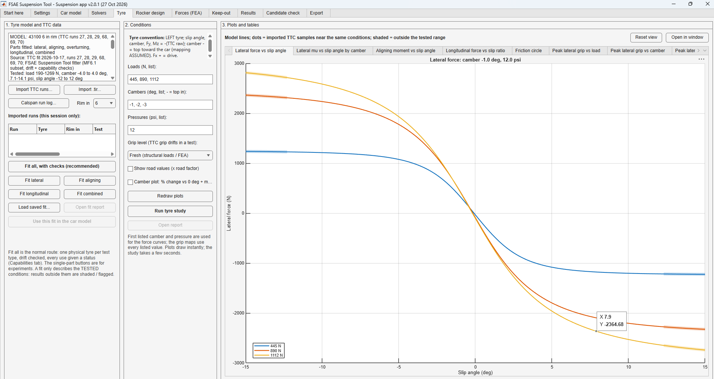

Tire data analysis
MATLAB fitters that turn Tire Test Consortium data into Pacejka Magic Formula models of our Hoosier tires: lateral and longitudinal force, aligning moment and combined slip. The model replaced searching raw test data by hand, runs inside the FSAE Suspension App, and now sets the team's tire pressures, camber targets and FEA tire loads.

Why build a tire model
Before this model, the team worked straight from raw Tire Test Consortium data. Checking one case, a given load, camber and pressure, meant searching the entire dataset by hand, and the answer only existed where the test happened to run.
A fitted model answers for any condition on demand, and it's clear about where it's interpolating and where it's extrapolating.
| Raw test data | Fitted model |
|---|---|
| Search the whole dataset by hand for each case | Any load, camber, pressure and slip on demand |
| Only the exact conditions that were tested | Smooth curves between them, with extrapolation flagged |
| Noisy samples, and grip that drifts through each test | A robust fit, with drift checked and two grip levels |
| Numbers copied into calculations by hand | Built into the Suspension App's grip limits and FEA load cases |
How the model is built
I've done this work on my own since March 2026. The data are TTC runs for our Hoosier 43100 on a 6 in rim. Each channel is fitted to the Magic Formula 6.1.2 form with MATLAB's lsqnonlin, using a robust Huber loss (iteratively reweighted) so outlier samples don't drag the fit, and multiple starting points so the optimizer doesn't settle in a poor local minimum.
The fitter checks every test for grip drift and gives each use of the model a status, so a number outside what the data support is flagged instead of trusted. The fits now run inside the Suspension App's Tyre tab.
| Fit | RMS error | Test samples |
|---|---|---|
| Lateral force | 66.9 N | 50,300 |
| Aligning moment | 8.19 N·m | 50,300 |
| Longitudinal force | 133.5 N | 17,020 |
| Combined slip | 190.2 N | 25,310 |
What the data showed
Fitting the data exposed three ways our tires break the usual expectations:
- Slightly positive camber at low loads. Grip doesn't simply rise with more negative camber. The best camber moves from slightly positive at the lightest load to about −3° at the heaviest.
- Grip drift. Grip drifts slightly through each test, so the model keeps two grip levels: fresh, for structural loads, and settled, for handling.
- Strong asymmetry. Conicity and ply steer give the tires a heavy directional bias, so left and right turns aren't mirror images.


What it changed
Compared with last season's workflow, the model let us:
- Find the best tire pressure for lateral and longitudinal grip, front and rear.
- Choose the camber gain that keeps the tires in their peak-grip window.
- Set static camber and toe.
- Use real tire forces in the FEA load cases instead of approximations.
- Extrapolate more reliably beyond the TTC's tested ranges, with those results flagged.
- Tune the rockers and anti-roll bars for wheel and roll rates that keep each tire's vertical load in its peak-grip band.
- Tire pressures
- Camber gain
- Static camber and toe
- FEA tire loads
- Rocker and ARB rates
Validation and next steps
I evaluated each fit on test runs that weren't used to fit it, and the error stayed between 2.6% and 3.0% of each load's measured peak force. In the app, every use of the model carries a status (supported, conditional, band or not supported), and anything outside the tested load, camber, pressure or slip range is shaded on the plots.
Next: [next steps]